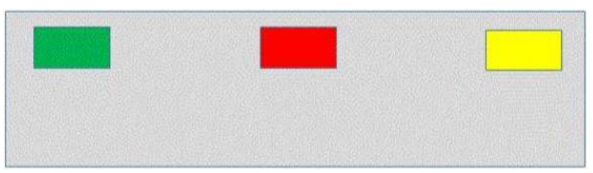
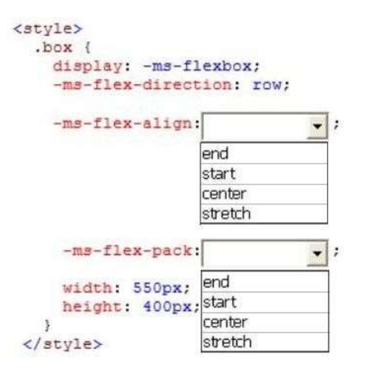

QUESTION 105: (CSS Flexbox: posiblemente no entre en examen y esté obsoleto)
You are developing a web page. The webpage must display a container. The container must display three colored rectangles near the top of the container. The colored rectangles are, in order, green, red, and yellow. The rectangles are aligned horizontally and evenly spaced across the width of the container. The layout of the page must resemble the following image:
You need to ensure that the page renders properly. How should you complete the relevant styles? (To answer, select the appropriate option from each drop- down list in the answer area.)
